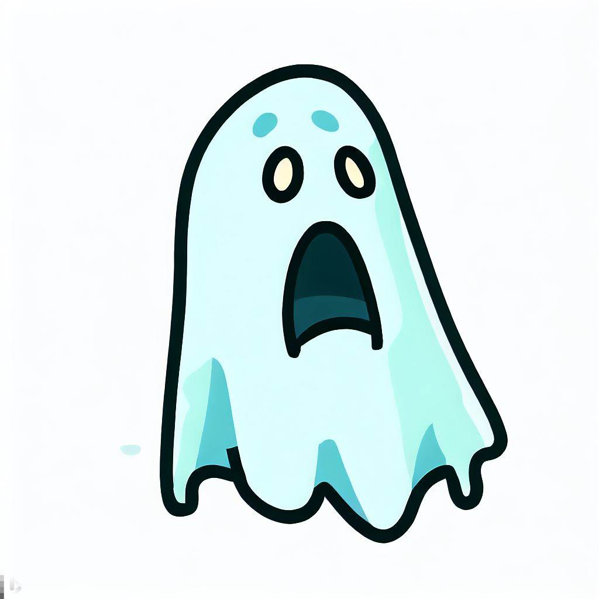

PROJECTS

RayTrace Model
Ray trace model based on OpenGL
Demo Download
Github link:
https://github.com/Acho-177/RayTrace-Model

Particle System
Foundamental Particle System based on MFC
Demo Download
Github link:
https://github.com/Acho-177/Particle-Effect

Ghost Go
Android Application
Develop inspired by Pokemen Go
Demo Download
Github link:
https://github.com/Acho-177/Ghost-Go